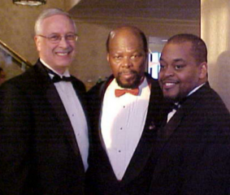
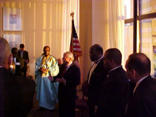
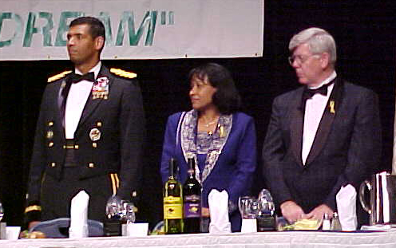
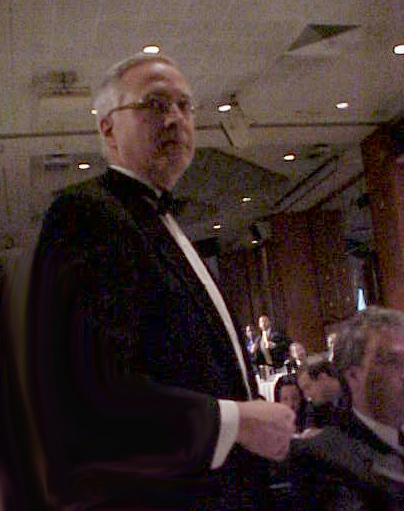

"Economic rights ARE human
rights"


An initiative of the Center for
the Defense of Free Enterprise
in cooperation with the Congress of Racial Equality.
Paul Driessen, Director. Niger Innis, CORE National Spokesperson.
|
|
Economic
Human Rights Project
"Economic rights ARE human
rights" |
||
|
|
An initiative of the Center for
the Defense of Free Enterprise |
Economic Human Rights
Project: January 19, 2004
Congress of Racial
Equality Ambassadorial Reception, New York City
|
Message from Alan Gottlieb, President, CDFE: We are proud to announce the Economic Human Rights Project, in cooperation with CORE, the Congress of Racial Equality. I am personally pleased to join in this project with Mr. Roy Innis, CORE chairman, a long-time ally in the fight for civil rights and individual liberty. As we stand side by side here in New York City, we look forward to great achievements together in bringing economic human rights to people everywhere. Mr. Innis and I are pleased that Mr. Paul Driessen, noted author and veteran public policy expert, has agreed to take on the challenging job of Director of the Economic Human Rights Project. Mr. Driessen will be responsible for developing and implementing the Project's goals and programs. |
|
 The Economic Human Rights Project was approved at the Congress of Racial Equality 2004 Martin Luther King Holiday Celebration in New York City. Director Paul Driessen, CORE Chairman Roy Innis, and CORE National Spokesperson Niger Innis made final arrangements for the cooperative venture between the Center for the Defense of Free Enterprise and the Congress of Racial Equality. Center president Alan Gottlieb and executive vice president Ron Arnold attended. |
| Paul Driessen, Roy Innis, Niger Innis |
|
 At the Ambassadorial Reception, Raymond V. Gilmartin, Chairman, President and Chief Executive Officer of Merck & Company, confirmed his company's continued work in Africa to provide free and low-cost drugs to fight HIV infection. The Economic Human Rights Project will be working to help people eliminate malaria, the continent's worst killer.
|
20th Annual CORE Dr. Martin Luther King, Jr. Awards
Celebration,
New York City
At awards ceremony, Paul Driessen is
recognized and Eco-Imperialism books are distributed to guests.
 |
Iraq war hero Brigadier General Vincent Brooks, California Supreme Court Justice Janice Rogers Brown, and American Conservative Union Chairman David Keene were honored with awards for outstanding service in "Living the Dream" of Dr. Martin Luther King Jr. |
|

Project Director Paul Driessen was recognized for his new book Eco-Imperialism: Green Power Black Death, which was distributed to guests.
CORE National Spokesperson and author of the book's introduction, Niger Innis, announced a high-level seminar on Eco-Imperialism to be held at the Sheraton New York Hotel and Towers the next day, co-sponsored by CORE and the Womens' National Republican Club. |
Next:
January 20, 2004 Eco-Imperialism Seminar, New York City.
RETURN TO ECONOMIC HUMAN RIGHTS PROJECT TOP PAGE
RETURN TO CENTER FOR THE DEFENSE OF FREE ENTERPRISE HOME PAGE